About Photography
A few years ago my grandpa gave me his old film camera because he wasn't using it anymore. I've brought in on holidays with me to Norway, Italy and the South of France these past few summers. Here are some of the shots I took. They aren't all great, some don't have the best exposition and these are the raw versions so some of the colors are a bit dull. Nevertheless I really enjoy carrying it around because there are some good ones in there. Also, because I have to wait to get them developped I like the surprise of discovering what I took pictures of every time.
 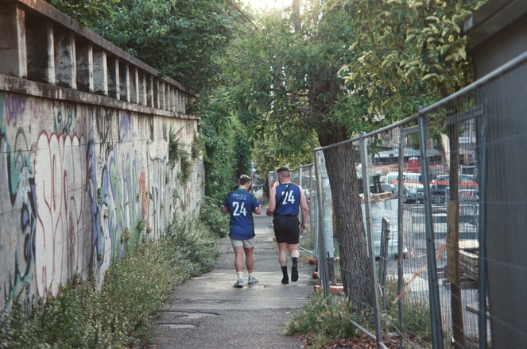
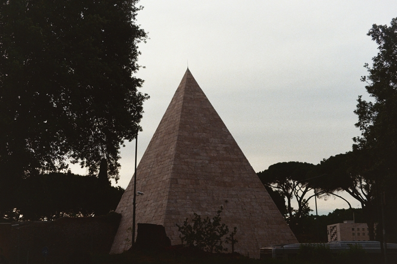
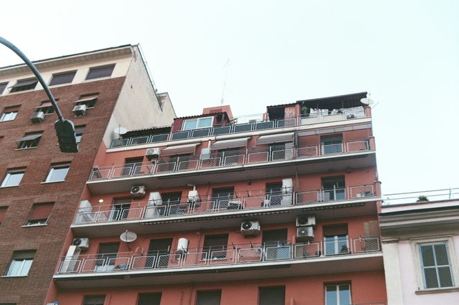
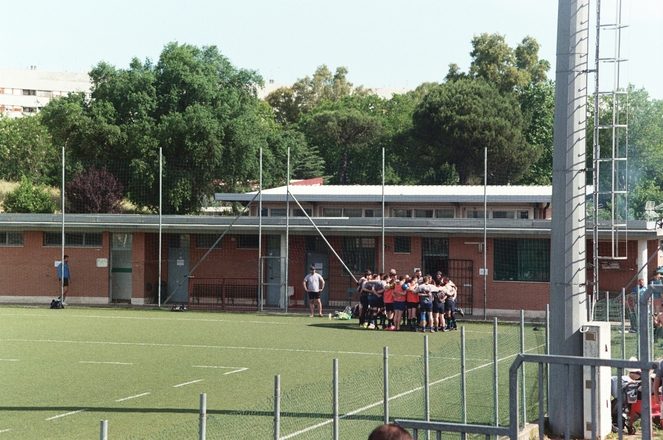
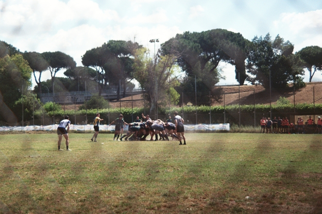
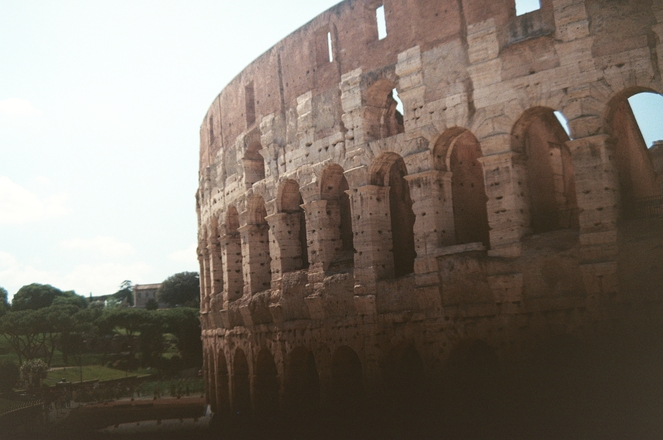
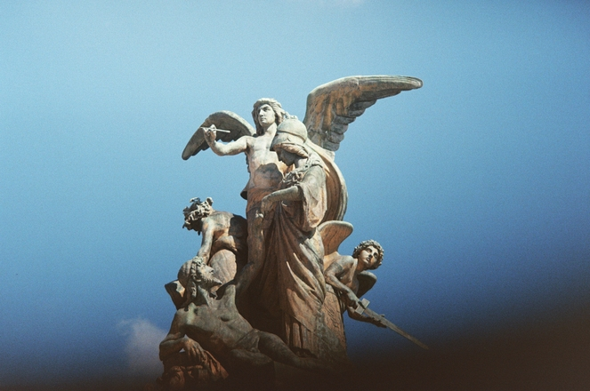
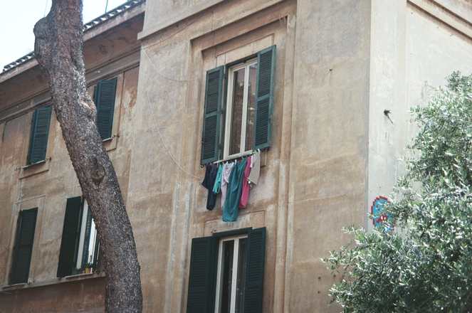
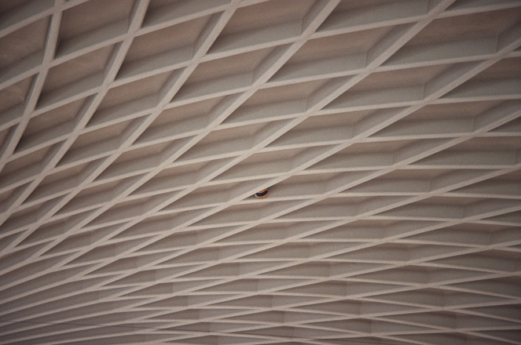
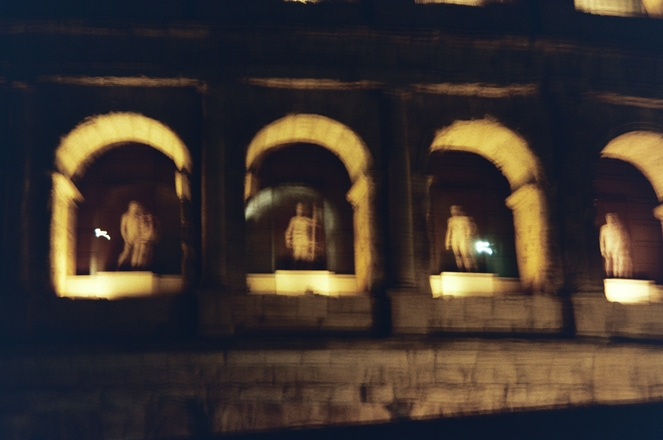
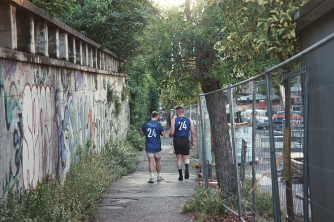
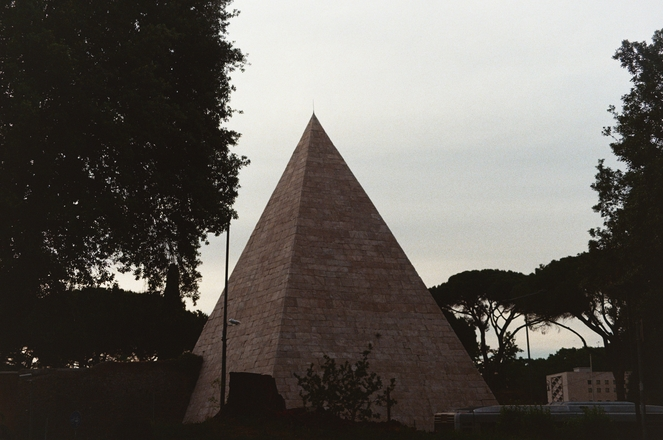
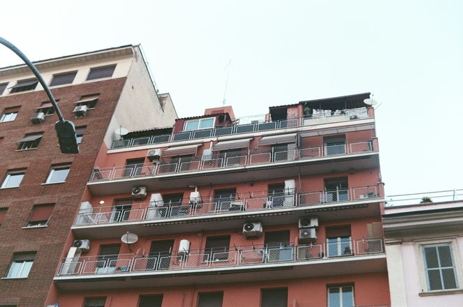
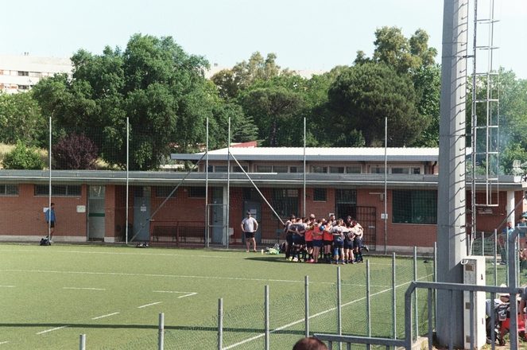
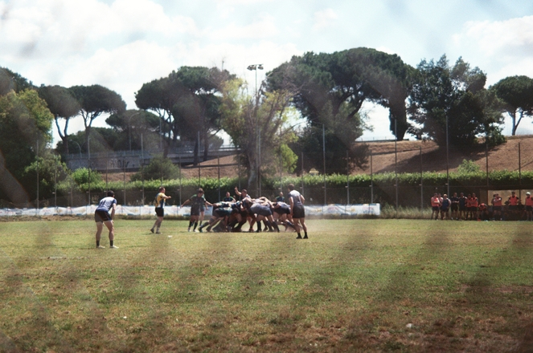
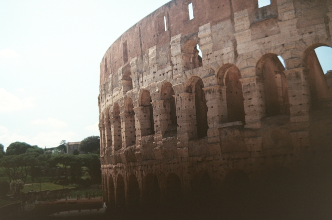
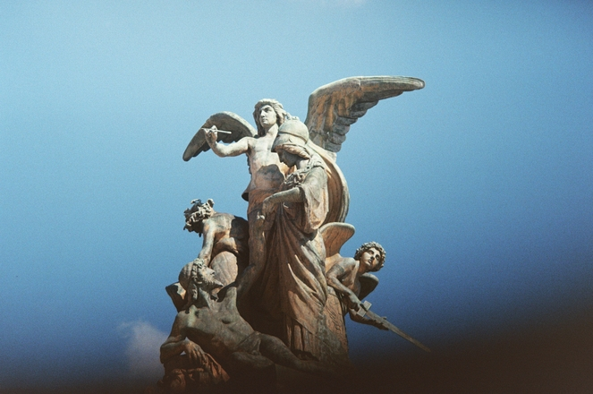
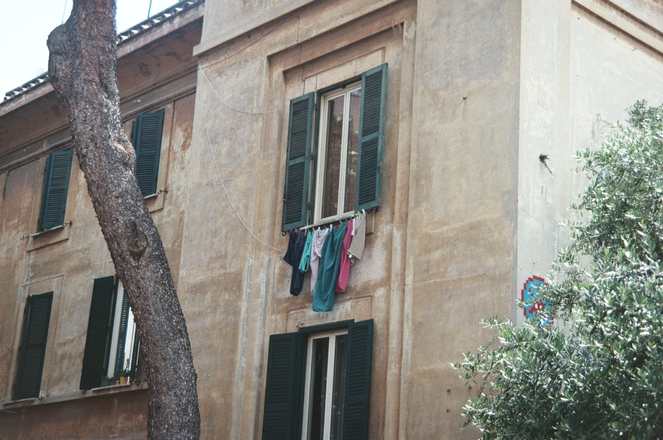
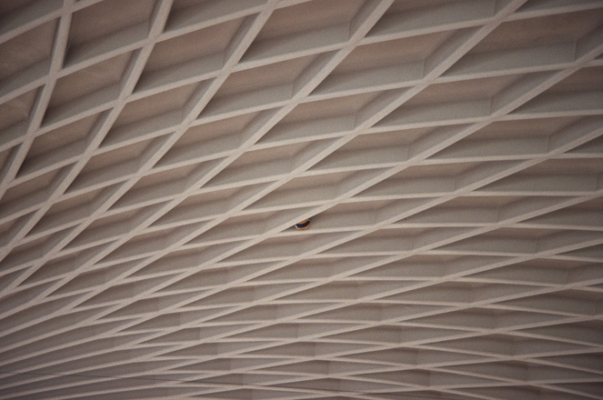
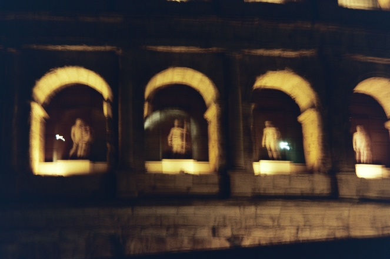